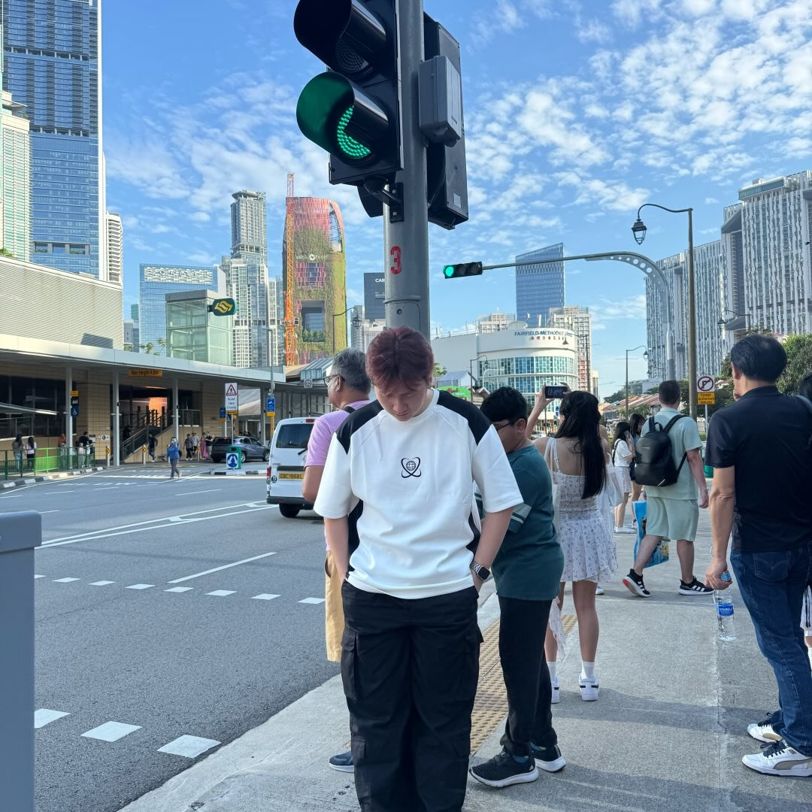
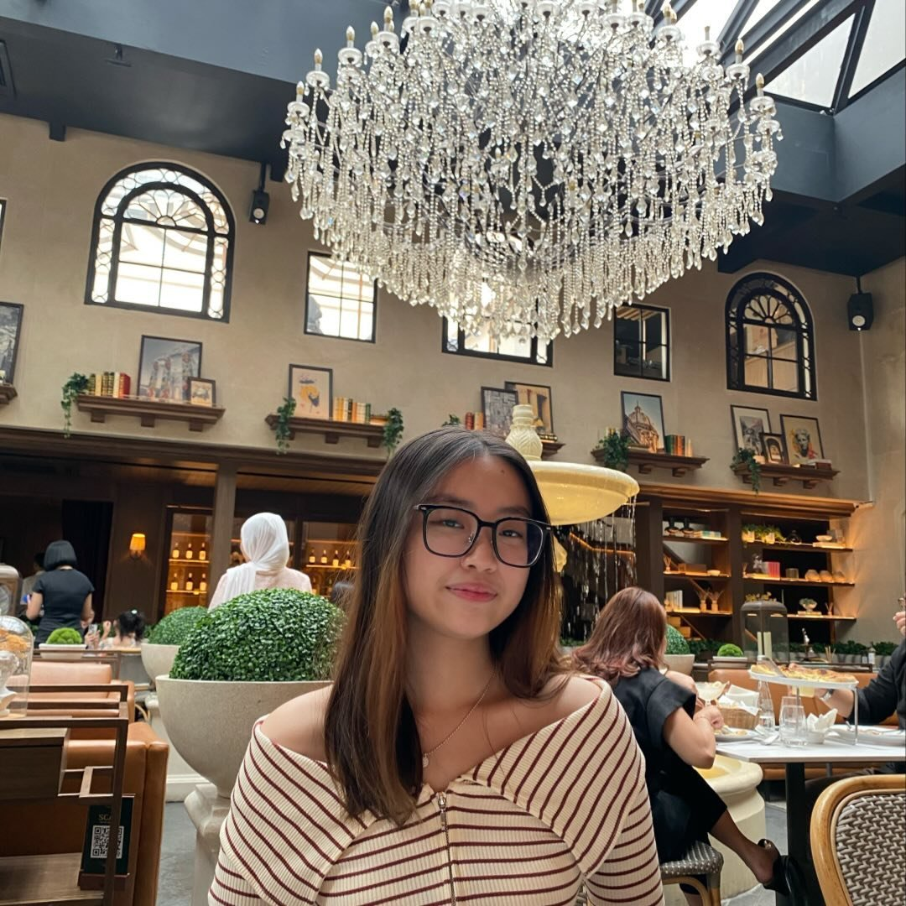

About C'Groovy
Discover the story behind your favorite music discovery platform and meet the passionate team that makes it all possible.
Our Journey
2022
The Beginning
C'Groovy was born from a simple idea: to create a platform where music lovers could discover and share their favorite tracks across different genres. Our founders, passionate about music diversity, wanted to bridge the gap between mainstream and indie music.
C'Groovy was born from a simple idea: to create a platform where music lovers could discover and share their favorite tracks across different genres. Our founders, passionate about music diversity, wanted to bridge the gap between mainstream and indie music.
2023
Expansion & Growth
We expanded our music collection to include Pop, R&B, and K-pop genres, partnering with independent artists and record labels. Our user base grew to over 10,000 active music enthusiasts who trusted our curated recommendations.
We expanded our music collection to include Pop, R&B, and K-pop genres, partnering with independent artists and record labels. Our user base grew to over 10,000 active music enthusiasts who trusted our curated recommendations.
2024
Innovation & Features
Launched our signature recommendation system and interactive music discovery features. We introduced personalized playlists and became a go-to platform for discovering new artists and hidden gems in the music world.
Launched our signature recommendation system and interactive music discovery features. We introduced personalized playlists and became a go-to platform for discovering new artists and hidden gems in the music world.
2025
Present Day
Today, C'Groovy continues to evolve, focusing on creating meaningful connections between artists and listeners. We're committed to supporting emerging talents while celebrating established favorites across all genres.
Today, C'Groovy continues to evolve, focusing on creating meaningful connections between artists and listeners. We're committed to supporting emerging talents while celebrating established favorites across all genres.
Meet Our Core Team

Justin Hanson Liong
Founder & CEO
Visionary leader with 8+ years in the music industry. Alex oversees the strategic direction of C'Groovy and maintains relationships with artists and record labels worldwide. Passionate about discovering new talent and creating innovative music experiences.

Steven Harjanto
Head of Curation
Music curator extraordinaire with an ear for quality across all genres. Sarah leads our content team and is responsible for our carefully crafted playlists and recommendations. She ensures every song on C'Groovy meets our high standards for musical excellence.

Fransisca Claudia Bunari
Technical Director
Tech innovator behind C'Groovy's seamless user experience. David manages our platform's technical infrastructure and develops new features that make music discovery effortless and enjoyable. His expertise keeps C'Groovy running smoothly 24/7.